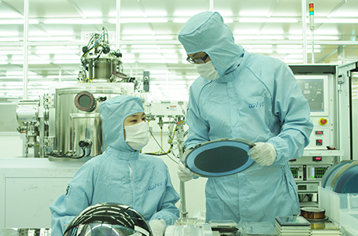

高级人才辈出的教育型城市
- Home
- 投资优势
- 大邱独特的投资环境
- 高级人才辈出的教育型城市
高级人才辈出的教育型城市
- 大邱圈内 53 所大学每年可培养出7万多名高级人才，具备稳定的人才资源(每年工大毕业生达17,000名)。
- 成立针对外国人、规模达580名的大邱国际学校：ESIAPOLIS内(2010年8月开业)。
- 拥有DGIST(IT、BT、NT、MT)、庆北大学(电子、电力、手机)、岭南大学(机械、纤维)、启明大学(汽车、生物)、大邱大学(韩医方)等特色专业化大学。
- 具备135家研发中心(研发人才4,800多名)，以实现由600多名工科大学教授参与的企业合作。
- 通过产、学合作，培养符合型人才(2011年成立三星电子和庆北大学的手机工学科)。
- 具备相当于首都区域70%的廉价的人工费，以及低离职率(平均2.04%，以2007年为准)。


